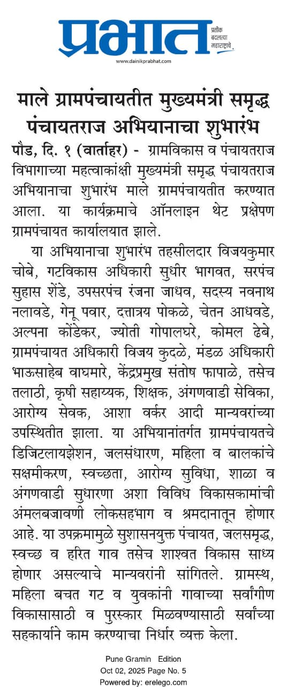
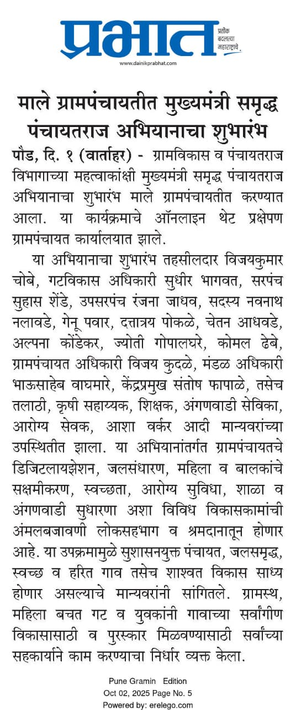
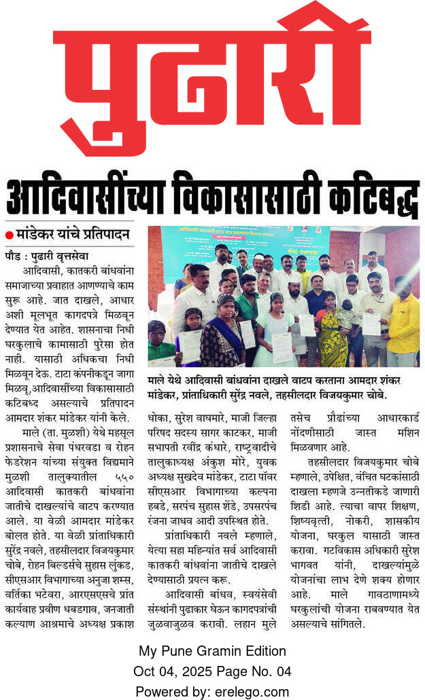
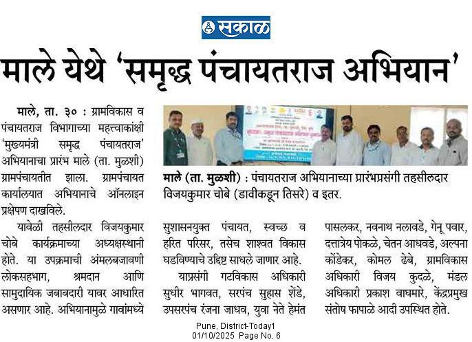

मुख्यमंत्री समृद्ध पंचायतराज अभियानाचा शुभारंभ
माले ग्रामपंचायतीत मुख्यमंत्री समृद्ध पंचायतराज अभियानाचा शुभारंभ करण्यात आला. तहसिलदार विजयकुमार चौबे यांच्या उपस्थितीत ग्रामपंचायत सदस्य आणि नागरिक मोठ्या संख्येने सहभागी झाले.

माले ग्रामपंचायतीत मुख्यमंत्री समृद्ध पंचायतराज अभियानाचा शुभारंभ करण्यात आला. तहसिलदार विजयकुमार चौबे यांच्या उपस्थितीत ग्रामपंचायत सदस्य आणि नागरिक मोठ्या संख्येने सहभागी झाले.
माले येथे आयोजित कार्यक्रमात आदिवासी बांधवांना शासकीय योजनांचे लाभ देण्यात आले. आमदार शंकर मांडेकर यांच्या हस्ते प्रमाणपत्रे वितरित करण्यात आली.
माले गावात पंचायतराज अभियानाच्या यशस्वी अंमलबजावणीसाठी ग्रामपंचायत अधिकारी व सदस्यांचे अभिनंदन करण्यात आले.
